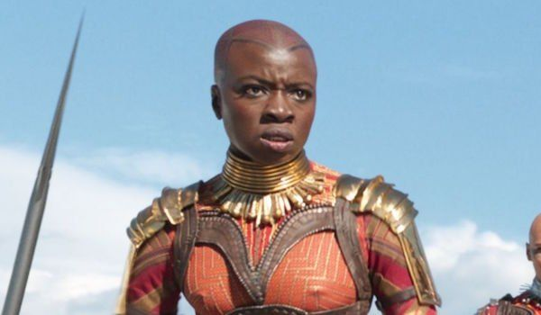

Okoye adalah mantan Jenderal Dora Milaje dan kepala angkatan bersenjata dan intel Wakandan. Menyaksikan penobatan T'Challa, dia bergabung dengannya dalam melacak Ulysses Klaue. Setelah Erik Killmonger menggulingkan T'Challa, Okoye mendapati dirinya berkonflik antara persahabatannya dengan T'Challa atau tugasnya kepada raja barunya. T'Challa segera kembali dan Okoye segera bergabung dengannya dalam perang melawan Killmonger dan berhasil merebut kembali takhta. Ketika Thanos dan pasukannya tiba di Bumi untuk secara paksa mengambil Batu Pikiran dari Vision, Okoye segera terpaksa membela Wakanda bersama rajanya dan para Avengers. Meskipun mereka berhasil membunuh pasukan Thanos ketika Thanos sendiri datang ke Wakanda, Okoye dan para pahlawan lainnya benar-benar dikuasai dan tidak mampu menghentikannya untuk menyelesaikan Infinity Gauntlet, meskipun Okoye tetap menjadi salah satu yang selamat.
Setelah Snap, Okoye bergabung dengan Avengers, melayani di bawah komando Natasha Romanoff sekaligus memimpin Dora Milaje di Wakanda. Setelah Blip pada tahun 2023, yang membangkitkan semua nyawa yang diklaim oleh Snap, dia bergabung dengan T'Challa dan Wakanda untuk memberikan bantuan kepada Avengers selama Pertempuran Bumi, membunuh Corvus Glaive. Setelah pertempuran, dengan Avengers sekarang mati, dia kembali ke Wakanda dan kembali melayani T'Challa.